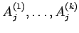

Inhalt Index DeskTop Bronstein

 Algebra und Diskrete Mathematik Fuzzy-Logik Wissensbasierte Fuzzy-Systeme Wissensbasiertes Interpolationssystem
Algebra und Diskrete Mathematik Fuzzy-Logik Wissensbasierte Fuzzy-Systeme Wissensbasiertes Interpolationssystem


Mit Hilfe der Fuzzy-Logik lassen sich Interpolationsmechanismen aufbauen. Fuzzy-Systeme sind Systeme zur Verarbeitung unscharfer Informationen, mit ihnen lassen sich Funktionen approximieren und interpolieren. Ein einfaches Fuzzy-System, an dem diese Eigenschaften untersucht wurden, ist der SUGENO-Controller. Er besitzt n Eingangsvariable und bestimmt den Wert der Ausgangsvariablen y durch Regeln der Form
| (5.421) |
Die Fuzzy-Sets  partitionieren dabei jeweils die Eingabenmenge  Die Konklusionen der Regeln sind Singletons, die von den Eingabevariablen abhängen können.
Die Konklusionen der Regeln sind Singletons, die von den Eingabevariablen abhängen können.
Durch die einfache Wahl der Konklusionen kann auf eine aufwendige Defuzzifizierung verzichtet werden und der Ausgangswert y als gewichtete Summe berechnet werden. Dazu berechnet der Controller für jede Regel  mit einer t-Norm aus den Zugehörigkeitsgraden der einzelnen Eingaben einen Erfüllungsgrad
mit einer t-Norm aus den Zugehörigkeitsgraden der einzelnen Eingaben einen Erfüllungsgrad  und bestimmt den Ausgangswert zu
und bestimmt den Ausgangswert zu
| (5.422) |